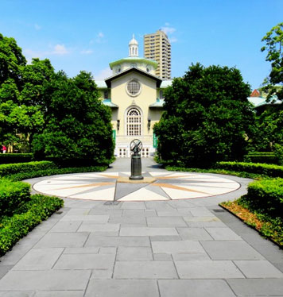

The Places You'll Go!
Brooklyn Botanic Garden
|  |
Cost:
|
||||||||||||
| Truly spectacular display of colors in the form of cherry blossom. They are in full bloom and would probably last another week. It is pretty crowded on weekends. The park has a few gardens inside - herb garden, rock garden, cherry esplanade, Japanese garden, Osborne garden and an observatory. All of these can be covered in about 4 hours. The roses are not in bloom yet but the tulip show near the observatory more than compensates for the roses. There is also a sensing garden in the visitor's center where you can smell the fragrances, listen to the sounds of various birds on an electronic board. Kids would love this. Although the park closes at 6 pm, the observatory inside closes by 5. So please make sure that you enter the observatory by 4 pm at the latest. Also there are only a couple of places (visitor's center & observatory) with restrooms. So there could be a bit of queue for using the same. Overall a great place to spend an afternoon. |
|||||||||||||